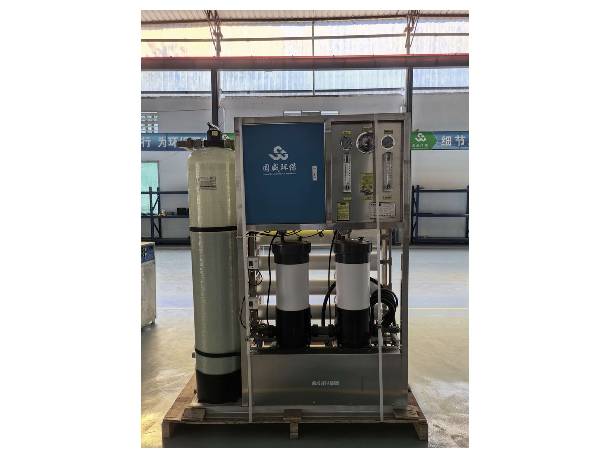
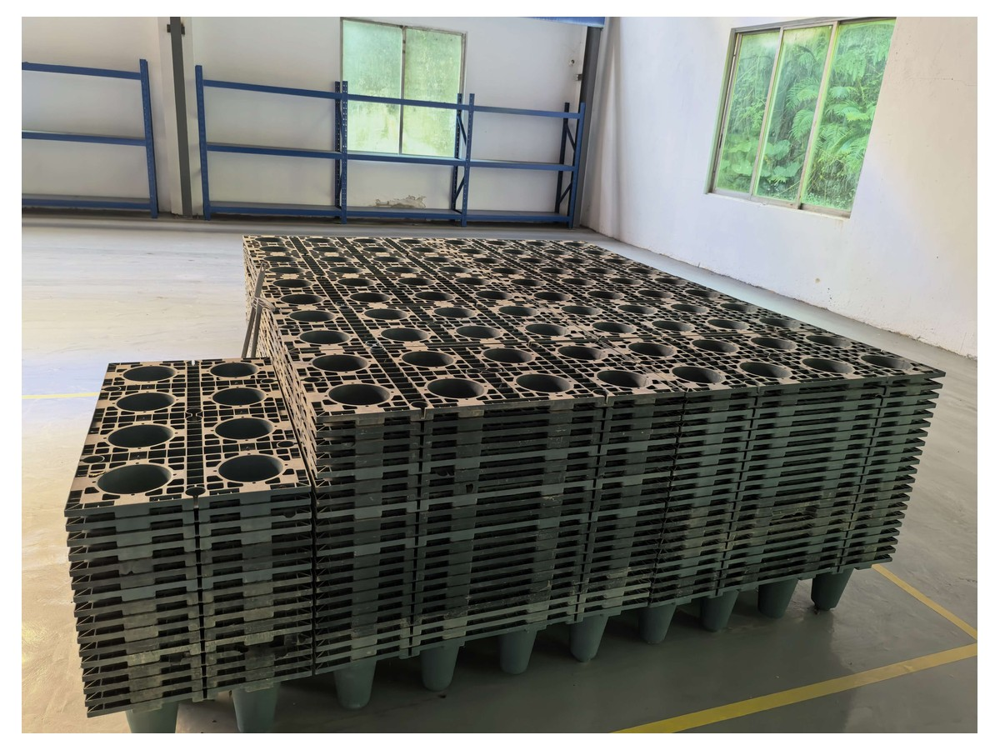
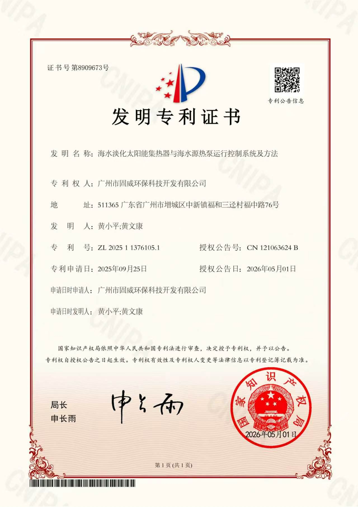
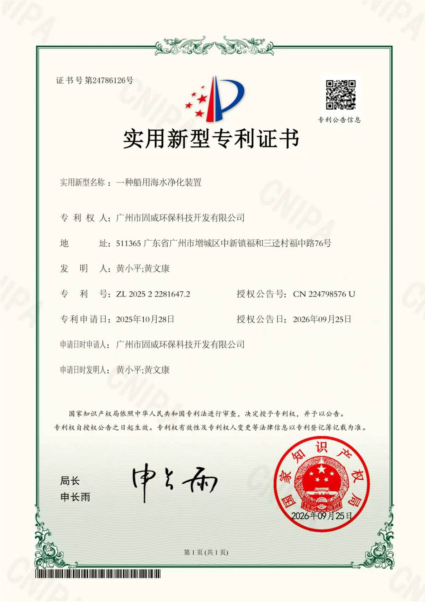

污水处理厂解决方案 ↗
规模匹配 · 提标改造 · 运行稳定性
规模匹配 · 提标改造 · 运行稳定性
分散站点 · 低温运行 · 尾水利用
高有机负荷 · 油脂分离 · 生产波动
分类收集 · 消毒控制 · 污泥管理
纳管条件 · 分类处理 · 改造衔接
设备选型 · 泵房布置 · 图纸配合
汛期工况 · 泵组冗余 · 远程运维
 01
01按水质与处理目标配置污水处理单元。
 02
02泵站筒体、泵组、管路与控制设备。
 03
03围绕用水需求、压力与原水条件选型。

04海水淡化设备与膜系统。

05PP 雨水模块及配套收集系统。
 06
06将监测、报警与设备控制纳入系统设计。
 07
07容器制造与工程配套产品。
 08
08按使用人数及现场条件选择容积与安装方式。
某市政污水处理厂三期项目，项目规模 6 万 m³/d。
大湾区某食品加工厂屠宰废水处理项目，项目规模 4,000 m³/d。
池体施工、设备布置与现场安装。

发明专利
专利号：ZL 2025 1 1376105.1

实用新型专利
专利号：ZL 2025 2 1853240.6

实用新型专利
专利号：ZL 2025 2 2281647.2
连接现场设备、PLC 与监控终端，集中查看设备状态和运行信息。
了解智慧水务广州市固威环保科技开发有限公司成立于2015年，围绕容器制造、生化工艺和电气自控开展业务。
增城制造基地 · 玻璃钢自缠绕线
围绕水质、负荷与排放目标评估处理路径
电气规划方案、成套电气柜生产、机电安装与调试。